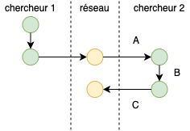

Science des données biologiques I
Réalisé par le service d'Écologie numérique, Université de Mons (Belgique)Objectifs
- Vérifier que la terminologie relative aux différents outils logiciels qui seront utilisés est connue.
- Auto-évaluer sa compréhension des différents actions ‘Git’.
Outils logiciels
Répondez aux questions ci-dessous après avoir lu attentivement la théorie correspondante.
Analyse de situation Git
Situation 1
Deux chercheurs distants de plusieurs centaines de kilomètres, collaborent sur un projet commun. Ils ont pour cela décidé d’employer un outil de gestion de version et d’héberger ce projet sur un système d’hébergement web dédié pour cela.
Sur base de l’image ci-dessous et de la situation précisée précédemment, répondez aux questions suivantes.

Situation 2
Le chercheur 2 s’intéresse au projet du chercheur 1, travaille dessus et propose des modifications afin l’améliorer.
Sur base de l’image ci-dessous et de la situation précisée précédemment, répondez aux questions suivantes.

Situation 3
Le chercheur 2 vient d’intégrer le projet que le chercheur 1 réalisait seul. Il doit donc acquérir le dépôt pour la première fois sur sa machine avant de pouvoir contribuer à ce projet.
Sur base de l’image ci-dessous et de la situation précisée précédemment, répondez aux questions suivantes.

Conclusion
Vous avez beaucoup de nouveaux outils logiciels à découvrir. Nous progresserons étape par étape pour les maitriser. Pour l’instant, l’important est d’avoir une vue d’ensemble des différents logiciels utilisés et de comprendre la terminologie de Git.